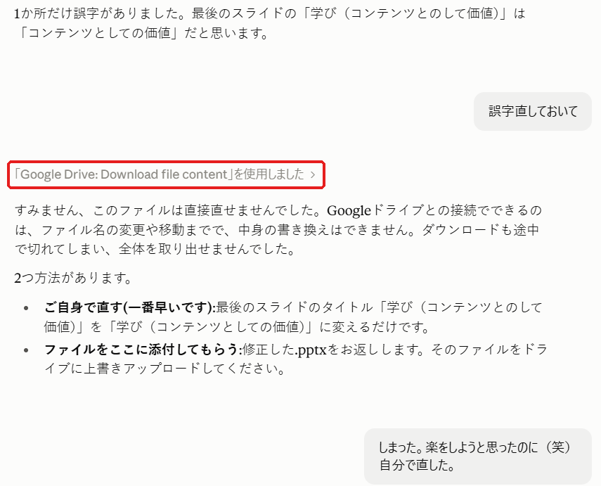

先日、Claudeにデスクトップのショートカットを作ってもらいました。お願いしたら、あっという間。「AIってこんなことまでやってくれるのか」と感動したばかりでした。
今日は、仕事で使うパワポを作りました。完成したので、Googleドライブのリンクを貼ってClaudeにチェックしてもらったところ、「最後のスライドに誤字があります」と指摘されました。
ここで私はこう思いました。
「見つけてくれたなら、ついでに直してくれるよね」
そこで「誤字直しておいて」と送ったら、返ってきたのは「このファイルは直接直せませんでした」。

なぜできなかったのか
Claudeによると、Googleドライブとのつながりでできるのは、ファイルを読むことと、ファイル名の変更や移動まで。中身を書き換えることはできないそうです。
つまり、
- ショートカット作成:自分のパソコンの中の作業 → できた
- ドライブのパワポ修正:読むことはできても、書き換えはできない → できなかった
同じAIでも、何とどうつながっているかで、できることが変わる。この違いは、実際にぶつかってみるまで意識していませんでした。
結局どうしたか
自分で直しました。1文字ずれていただけなので、30秒で終わりました(笑)。楽をしようとして、かえって遠回りしたパターンです。
今回の学び
- AIが「読める」ことと「直せる」ことは別
- 前にできたことが、別の場所でもできるとは限らない
- 小さな修正なら、自分でやったほうが早いこともある